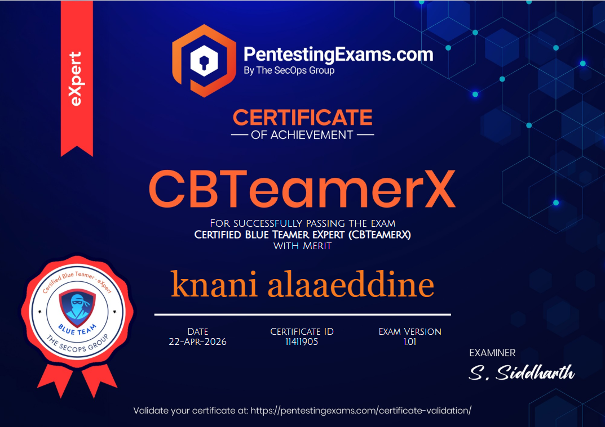

01 // What is CBTeamerX?
The Certified Blue Teamer eXpert (CBTeamerX) is an advanced, fully practical incident response and digital forensics examination by PentestingExams.com, the certification arm of The SecOps Group. It sits at the top of their blue team track - the "eXpert" tier - designed to test whether you can independently investigate a realistic, multi-stage APT intrusion from initial access all the way through persistence, lateral movement, and impact.
What sets CBTeamerX apart from most blue team certifications is the complete absence of multiple-choice questions. Everything is practical. You receive a preconfigured analysis environment containing SIEM data, forensic disk images, malware samples, memory dumps, network captures, and cloud logs - and your job is to reconstruct the full attack chain, identify every technique used, and answer a series of scenario-driven questions. No study guides tell you what to look for. You either know how to investigate or you don't.
02 // Who should take it?
The exam page recommends 5+ years of blue team experience as a baseline. That's not gatekeeping - it's accurate. This certification genuinely demands depth: you need to know the Windows internals behind event IDs, understand how attackers abuse AD protocols at the byte level, and feel comfortable pivoting between five different toolsets under time pressure.
| Role | How it fits | Min. recommended background |
|---|---|---|
| SOC Analyst (L2/L3) | Tests advanced detection and triage skills you use daily | 2+ years, strong SIEM background |
| DFIR Analyst | Validates disk/memory forensics and malware triage capabilities | 3+ years, FTK or Autopsy experience |
| Threat Hunter | Covers attack chain reconstruction and ATT&CK mapping | 2+ years, Sysmon + EDR familiarity |
| Offensive Security Engineer | Verifies you truly understand the defensive implications of your attacks | Solid AD + Windows internals knowledge |
| Cloud Security Engineer | Cloud IR section adds AWS/Azure log investigation | CloudTrail + IAM fundamentals |
03 // Exam format & environment
The exam is 7 hours long, taken remotely via VPN, on-demand. You connect to a dedicated analysis platform that includes everything you need: no installation, no setup time. The clock starts the moment you connect.
You receive credentials and a VPN config file. Connect and your isolated analysis environment spins up with all evidence pre-staged.
A realistic incident scenario is presented - a multi-stage intrusion against a corporate environment. Your role is the responding analyst.
SIEM dashboards, disk images (E01), memory dumps, malware samples, PCAP files, and cloud logs are all available. You pivot between them as the investigation requires.
Questions cover every phase of the attack chain. Answers must be specific - technique IDs, file hashes, exact timestamps, tool names, attacker infrastructure. No room for vague answers.
No extensions. Pacing matters. An analyst who is systematic and builds a timeline as they go will consistently outperform one who jumps around reactively.
04 // Core skill areas tested
CBTeamerX covers a wide surface. Every domain below appeared in some form during the exam. I'm deliberately keeping this section generic - specifics would leak exam content - but this should give you a clear sense of where to invest your preparation time.
Log Analysis & SIEM Investigation
The SIEM component is the backbone of the exam. You'll need to build queries from scratch,
correlate events across multiple sources, and reconstruct timelines. Strong Splunk SPL
fluency is the single highest-leverage skill you can develop for this exam. Know your
Sysmon event IDs cold - especially EventCode 1 (Process Create),
3 (Network Connection), 11 (File Create), and 22 (DNS Query).
Know Windows Security event IDs equally well: 4624, 4648,
4672, 4688, and the Kerberos family.
Disk & Artifact Forensics
You'll work with E01 forensic disk images containing real Windows file systems. Know how to navigate NTFS structures, extract artifacts from known-location paths, and parse SQLite databases for application artifacts. Browser history, sticky notes, credential stores, scheduled tasks - any of these can contain pivotal evidence. FTK is provided in the exam environment; be comfortable using it without a tutorial.
Malware Analysis & Reverse Engineering
Expect malware samples that require actual reverse engineering - not just running them through VirusTotal. You'll need to understand PE structure, resolve import tables, identify cryptographic routines (RC4, AES, XOR), and extract C2 configuration from obfuscated loaders. PowerShell payloads with multi-layer encoding (Base64 + XOR + GZip) are fair game. Python scripting to replicate encryption logic is a skill worth practicing.
Active Directory Attack Detection
AD attacks are a major component. You need to identify them from logs, not from a red team perspective. Know the MITRE ATT&CK technique ID for every major AD technique - the exam expects exact IDs in answers. Privilege escalation paths, lateral movement techniques, and credential access methods all appear. Understanding why a technique leaves the artifacts it does is far more valuable than memorizing technique names.
Cloud Incident Response
The cloud component focuses on AWS CloudTrail log analysis. You'll need to trace attacker activity through IAM events, identify compromised credentials, and reconstruct cloud-side lateral movement. The concepts are the same as on-premise - authentication, privilege escalation, data access - but the log format and service-specific API calls are cloud-specific.
05 // My preparation approach
My background coming into this exam: 5+ years in offensive and defensive security, strong Splunk and ELK skills from real SOC work, Windows event log analysis from incident response engagements, and Wireshark/PCAP analysis. I had already passed the eCTHP (88%) earlier this year, which built the DFIR and threat hunting foundations that made CBTeamerX more manageable.
Daily Splunk practice on real datasets. Built custom dashboards for process genealogy, logon event correlation, and lateral movement detection. The ability to write SPL queries under pressure - without autocomplete - is non-negotiable.
Practiced with FTK on Windows disk images. Memorized key artifact paths: registry hives, prefetch location, event log paths, browser databases. The exam environment doesn't hold your hand - you need to know where to look instantly.
Practiced identifying and reimplementing RC4, XOR-based obfuscation, and multi-layer PowerShell deobfuscation. The ability to write a 20-line Python script to decrypt a sample is worth hours of static analysis time.
Not the whole matrix - but every technique in the Privilege Escalation,
Credential Access, Lateral Movement, Persistence, and Defense Evasion tactics.
The exam uses exact technique IDs in answers. Know the format:
T1XXX.XXX for sub-techniques.
Spun up CloudTrail in a personal AWS account and generated attack scenarios
to understand what legitimate vs. malicious IAM activity looks like in logs.
Knowing the key API call names (AssumeRole, GetSecretValue,
CreateAccessKey, etc.) saves critical investigation time.
06 // The exam experience
The scenario is realistic in a way that most training labs aren't. The attacker in the scenario didn't use textbook techniques in isolation - they chained multiple techniques across multiple systems, left realistic artifacts, and used tools and methods that defenders actually encounter in the wild.
The investigation spans multiple machines and timeframes. You'll correlate events across Windows endpoints, a SIEM with hundreds of thousands of log entries, forensic disk images, and cloud logs. The attack chain has a clear narrative - initial access, internal reconnaissance, privilege escalation, lateral movement, persistence, and impact - but it's your job to reconstruct it from evidence, not from a story.
The malware component surprised me most in its depth. It goes well beyond "run strings and check VirusTotal" - you're expected to understand the logic inside the samples, extract configuration values, and understand what they reveal about attacker infrastructure and campaign identifiers.
07 // Essential tools to know
| Tool | Purpose in exam context | Priority |
|---|---|---|
| Splunk | Primary SIEM - log analysis, event correlation, SPL queries for process/network/auth events | Critical |
| FTK / FTK Imager | E01 disk image analysis, artifact extraction, NTFS navigation | Critical |
| Python | Rapid scripting for deobfuscation, cryptographic logic reimplementation, log parsing | Critical |
| x64dbg / IDA / Ghidra | PE binary analysis, IAT resolution, function identification in malware samples | High |
| Wireshark | PCAP analysis, C2 traffic identification, protocol-level artifact extraction | High |
| MITRE ATT&CK Navigator | Attack chain mapping - know the matrix well enough to not need it during the exam | High |
| DB Browser for SQLite | Parsing application databases embedded in disk images | Medium |
| AWS CLI / CloudTrail Console | Cloud log navigation and IAM event correlation | Medium |
08 // Tips for candidates
Document every artifact - timestamp, machine, meaning. It becomes your investigation log and connects dots hours apart.
If you invest in one skill, make it SPL. Fluent stats, rex, transaction queries under pressure are the real multiplier.
Answers require exact format: T1574.009, not "unquoted path." Focus on Priv Esc, Cred Access, Lateral Movement.
Implement XOR, RC4, Base64+GZip in Python from memory. During the exam you want muscle memory, not Stack Overflow.
The cloud component is not trivial. Know your CloudTrail event types, IAM abuse patterns, and cross-service lateral movement.
If an answer isn't obvious, flag it and keep going. Most blocked answers unlock once you have 80% of the chain mapped.
10 // The certificate
Certified Blue Teamer eXpert · 22-APR-2026 · Certificate ID: 11411905 ·
Exam Version 1.01 · With Merit · Examiner: S. Siddharth

Validate at:
pentestingexams.com/certificate-validation/
· ID: 11411905